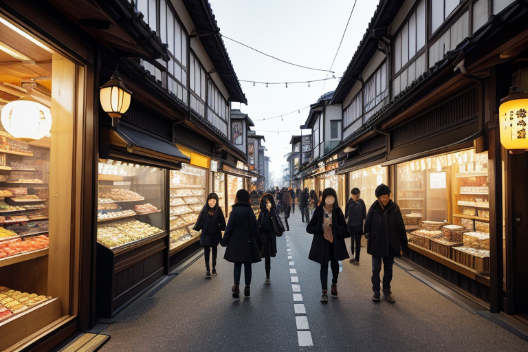
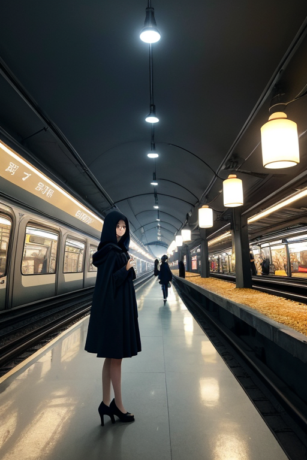
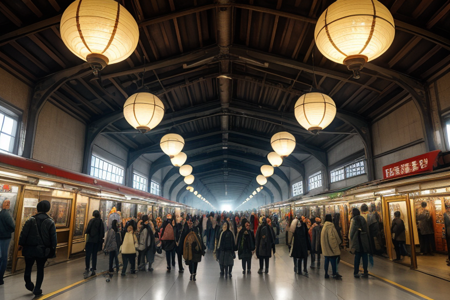
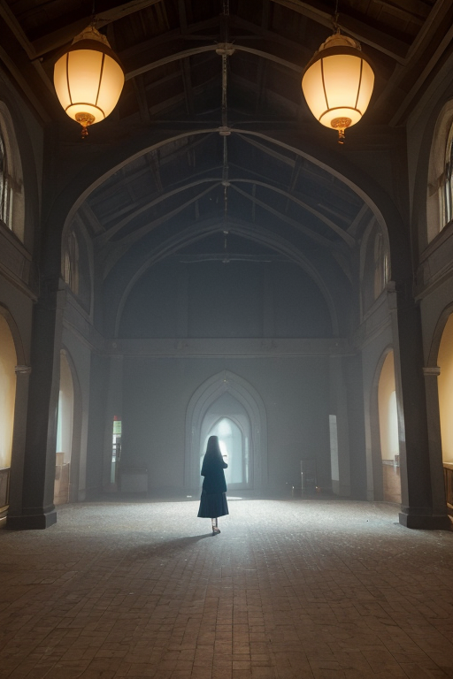
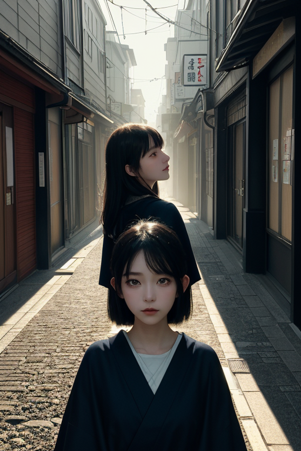

第一章 現実の埼玉
あなたはまだ気づいていない。この土地にも、王がいることを。
川越の蔵造りの通りは、土産物屋の活気に満ちていた。草加煎餅を求める観光客の列、十万石饅頭の甘い香り、狭山茶を試飲する人々のざわめき。金と欲望と日常の喧噪が、この土地の空気を濃密にしていた。首都に隣接する商都・埼玉。人の流れは絶えず、その全てが経済という名の巨大な循環の一部となって押し寄せ、去っていく。
その喧噪の真っただ中、日差しが蔵造りの壁に落とす影が、ほんの一瞬、不自然に長く伸びた。観光客が足をとられそうになったその時、影が微妙に形を変え、彼女は転ばずに済んだ。ただの偶然。誰も気に留めない。
影の中に、一人の青年が立っていた。地味な紺色のジャケットを着て、人混みに溶け込むように。彼はサイタマル・アンブラ、この地の王だ。彼の目には、賑わいの下を流れる「歪み」の細流が見えている。過剰な人流が生む圧力、焦燥、経済の熱が地殻に与える微かなストレス。彼はヒーローではない。ただ、影を操り、ほんの少し、日常の軋みを調整するだけだ。

第二章 歪みの兆候
鉄道博物館の巨大な車輪の前で、家族連れの笑い声が弾ける。その直下、展示物の影が、ごく僅かに不自然に揺れた。サイタマルは人混みの端に立ち、目を細める。観光客の熱気、子供たちの興奮、カメラのフラッシュ。それらが生み出す「密度」が、建物の基礎部分に微細なひずみを蓄積させていた。彼は指をわずかに動かす。展示室の照明が一瞬、ほんの一瞬だけ揺らめき、人々の影が伸びて床のひび割れを覆った。誰も気づかない調整だ。
彼の耳には、別の音も聞こえていた。秩父の山間から、遠い過去の怒りの残響。1884年、秩父事件の叫びは、土地の記憶として沈殿し、時に経済的な格差という形で「歪み」として現れる。今、この商都線の賑わいの裏側で、過剰な欲望と焦りが、同様のストレスを地中に送り込もうとしていた。サイタマルは、手に持った冷めた狭山茶の缶の表面を撫でる。平凡な日常の底流で、何かが蠢いている。

第三章 王の葛藤
鉄道博物館の巨大な車輪の前で、サイタマルは立ち止まった。ここには、人を運び、物を運び、富を運ぶ装置の歴史が詰まっている。その全てが、この土地に「流れ」と「圧力」をもたらした。観光客の笑い声、家族の会話。その裏で、彼の耳には別の音が絶えず流れ込む。通勤ラッシュのイライラ、取引の駆け引き、膨らむ借金への不安。これら無数の人間の欲望と焦燥が、目に見えない波紋となって地中を伝わり、微細な歪みを生み出す。
彼はそれを緩和する。アンブラルとカゲミナが、影のように人々の間に滑り込み、偶然の一歩を遅らせ、衝突寸前の肩をかわさせ、溜息をつく瞬間に風を送る。しかし、根本は消せない。守るべき日常そのものが、歪みの源泉でもあるという矛盾。十万石饅頭のような甘い日常の裏側で、かつて秩父で爆発したような経済的な亀裂の種が、今も形を変えて存在する。
サイタマルは濃紺の袖口を見つめた。誇りはある。この地味で巨大な日常を、崩壊しないよう支えているという。だが、その支えが、時に現状の不均衡を固定しているだけではないかという疑念が、銀の細い光のように胸をよぎる。彼は感情を持ち始めていた。それは、守護者としての静かな苦悩の形をとった。

第四章 妖精との対話
鉄道博物館の巨大な車輪の影に、アンブラルは佇んでいた。彼女の目は、展示物そのものよりも、そこに集う家族連れの足元、交わされる会話の断片、そして疲れと期待が混ざり合った空気の微かな歪みを追っていた。
「商いの本質は、交換です、王」と影の妖精は囁く。「狭山茶と草加煎餅、十万石饅頭と小江戸の人だかり。すべて、何かと何かを交換している。時間と金、労力と安らぎ、欲望と満足。この巨大な交換の流れが、この首都商の日常を形作っています」
サイタマルは黙って聞く。彼女の言葉は、祭り囃子の賑わいの下に流れる、経済という地脈の音のようだった。
「私たちが補正する偶然は、その流れが滞らないための微調整です。転びかけた子供を支え、迷った観光客に道を示し、ほんの少しの『うまくいきそうな気』を商いの場に添える。それは、かつて秩父で起きたような、交換の断絶が再び起きないための、目立たない仕事です」
平凡の裏側にあるのは、絶え間ない交換という営みそのものだった。そして、その流れを滑らかに保つことこそが、この地味な王国の、隠れた誇りの源泉であった。

第五章 微調整と余韻
鉄道博物館の巨大な車輪の前で、転びかけた幼子の足元に、アンブラルがほんの少し影を厚くした。子供はよろめいたが、母親の手にしっかりと捕まった。カゲミナは、混雑する川越の蔵造りの通りで、観光客の群れが一点に集中しないよう、人の流れに目に見えない緩衝を設ける。ほんの数秒、方向をずらし、密度を均す。
サイタマル・アンブラは、首都商の世界線が放つ圧力の歪みを、日々、黙って受け止めていた。巨大な経済の流れは、時に末端の日常をねじ曲げようとする。彼の仕事は、そのねじれが決定的な亀裂とならない前に、影の中でそっと手直しすることだ。草加煎餅を買い忘れそうになった老人の記憶を呼び起こし、狭山茶の新茶の香りが、ふと通りかかるビジネスマンの焦りを一瞬和らげる。それは、誰にも気づかれない、感謝されることのない調整。
彼は感情を持たないはずの王だった。しかし、調整の果てに残る、ほんのわずかな安堵の「余韻」を、最近、自分が待ち望んでいることに気づいた。誇りなどと言える大層なものではない。ただ、この平凡な日常の連鎖が、明日も無事に回り続けるための、地味で確かな手応え。
あなたの町にも、王がいる。